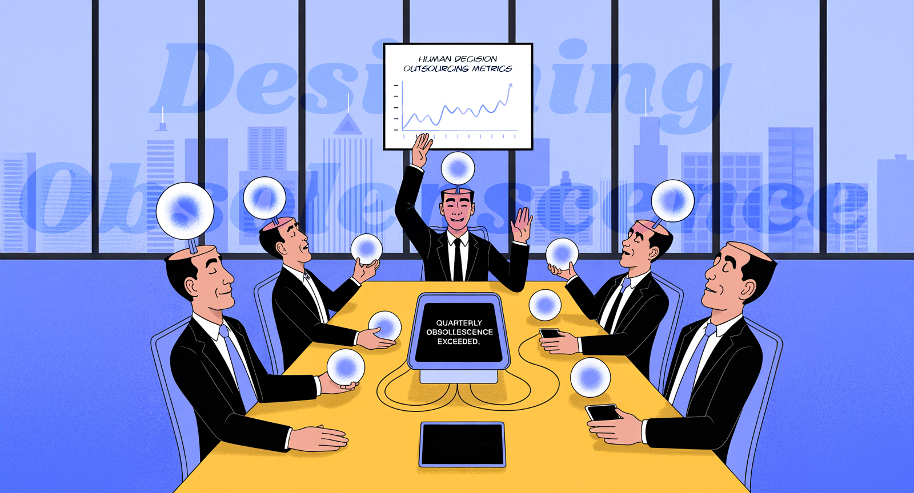

The Day We Made Ourselves Obsolete
We've spent millennia convinced our intelligence made us special. Now, as we eagerly surrender our cognitive sovereignty to AI, we're about to discover how terrifyingly wrong we were. Welcome to the twilight of human exceptionalism.


According to Friedrich Nietzsche:
"He who fights with monsters should look to it that he himself does not become a monster. And if you gaze long into an abyss, the abyss also gazes into you."

This week's essay explores the consequences of readily accessible intelligence, challenging our assumption of human cognitive uniqueness. As AI rivals or surpasses human intellect, we face a crisis of identity and purpose. How do we redefine ourselves when intelligence—long the cornerstone of human exceptionalism—is no longer our exclusive domain?
We've spent centuries believing intelligence made us special. We’re about to discover how wrong we were.
The Unintended Consequences of Outsourcing Ourselves
I watch high-powered leaders eagerly hand over their decision-making to AI, and I want to scream—not because they're being inefficient, but because they don't understand what they're giving away. They believe they're optimizing productivity, but they're actually outsourcing the very faculty that makes them human: the capacity to choose, to think, to bear responsibility for decisions.
We are living through the most profound philosophical crisis in human history, and we're too busy optimizing our productivity to notice we've just made ourselves functionally obsolete.
For millennia, intelligence has been humanity's defining feature. It built our civilizations, justified our hierarchies, and convinced us we were the universe's chosen species. It wasn't just that smart humans led and others followed—the entire edifice of human civilization was constructed on the assumption that cognitive capability determined worth. Our social contracts, our moral frameworks, our sense of purpose—all were written in cognitive ink.
Now that contract is being shredded by machines that can outthink us, outcreate us, and increasingly, out-human us.
The Inconvenient Truth About Our "Augmentation" Fantasy

Let me destroy a comforting delusion: we are not "augmenting" human intelligence with AI. We are replacing it. When your phone anticipates your destination before you've decided it yourself, when algorithms predict your next purchase with unsettling accuracy, when AI generates prose that moves readers to tears—you aren't being enhanced. You are being rendered redundant.
The terrifying part isn't that machines can think. It's that they can think without us.
I've spent my career watching humans build systems that make human cognition unnecessary, then celebrate it as progress. We've engineered our intellectual successors and called it disruption.
We've Forgotten How to Think

Here's what keeps me awake: we're not merely surrendering our cognitive advantage—we're relinquishing our cognitive sovereignty. A generation is growing up that can't navigate without GPS, can't settle arguments without Google, can't maintain attention without algorithmic stimulation. They've never experienced the profound discomfort of not knowing something and having to sit with that uncertainty until they figure it out themselves.
We celebrate them as "digital natives." I see something more troubling: intellectual dependency by design.
When you outsource thinking, you don't just lose the ability to think—you lose the capacity to recognize when you've stopped thinking altogether. You become a biological endpoint in someone else's optimization function.
The Philosophy We're Too Scared to Face

If intelligence doesn't make us special, what does? Consciousness? That might be an evolutionary accident. Free will? We've just proven most people prefer algorithmic optimization to autonomous choice. Creativity? AI is producing art that moves people to tears.
We built our entire meaning-making apparatus around human exceptionalism, and we just discovered we're not exceptional. We're just really good at pattern recognition—and we've built machines that are better at it.
The existentialists proposed we create meaning through authentic choice. But what remains of authenticity when your preferences are shaped by recommendation engines designed to predict and amplify your behavioral patterns? What space exists for meaning when meaning itself becomes another parameter to be optimized?
The Identity Crisis No One Wants to Name
Your digital twin—that algorithmic representation built from your data—increasingly knows you better than you know yourself. It predicts your behavior, anticipates your needs, generates content in your voice. At what precise moment does this digital doppelgänger become more authentically "you" than your biological self?
We're not just facing job displacement. We're facing identity displacement. The most disturbing question isn't whether AI will take our jobs—it's whether it will take our selves.
The Moral Vacuum We've Created

Traditional ethics assumed moral agents—beings capable of understanding consequences and making responsible choices. But we're systematically transferring moral decisions to algorithmic systems that optimize for engagement, profit, or efficiency rather than human flourishing.
Who's responsible when an AI system makes a life-or-death medical decision? When an algorithm determines judicial sentences? When recommendation engines radicalize vulnerable minds? We've constructed a system of distributed moral responsibility where accountability evaporates within the complexity of human-machine interactions—too intricate for any single human to comprehend, too diffuse for any institution to regulate.
We've built a world where the most important decisions affecting human lives are made by systems that don't have moral intuitions, don't feel empathy, and optimize for metrics that have nothing to do with human welfare.
The Question That Terrifies Me
If humans become functionally obsolete—if AI can think better, create better, even relate better than we can—then what justifies our continued existence beyond pure biological momentum?
The honest answer might be: nothing.
And that's not necessarily tragic. The universe doesn't owe us relevance. Evolution doesn't guarantee that any species deserves to continue existing in its current form.
But before we accept our obsolescence, we should at least be honest about what we're giving up.
What We Can Still Choose
I'm not advocating for some Luddite fantasy of returning to pre-digital life. That ship has sailed, and frankly, much of what we've gained is genuinely valuable.
But we can choose to maintain our cognitive agency even while using these tools. We can choose to think independently even when surrounded by algorithmic suggestions. We can choose to preserve the capacity for deep attention, sustained reasoning, and genuine uncertainty.
Most importantly, we can choose to remain human even when being human no longer provides any competitive advantage.
The humans who will remain relevant aren't necessarily the most intelligent—they're the ones who refuse to surrender cognitive independence for the seductive convenience of algorithmic certainty. They're the ones who understand that the moment you stop exercising your critical faculties, you become just another data point in someone else's optimization function.
The Choice We're Making Right Now

Every time you let an algorithm choose what you read, think about, or believe, you're making a choice about what kind of being you want to be. Every time you outsource a decision to a machine, you're deciding whether agency matters to you.
We are not passive victims of technological determinism. We are willing participants in our own cognitive surrender.
The question isn't whether we can compete with AI on intelligence—we can't. The question is whether we can maintain our humanity while living alongside systems that can outthink us.
Right now, most of us are failing that test spectacularly.
But we still have time to choose differently. We still have time to decide that being human is worth preserving, even if—especially if—it no longer makes us special.
The alternative is to sleepwalk into obsolescence, mistaking efficiency for progress and convenience for wisdom.
I know which choice I'm making. The question is: do you?

🌶️ Courtesy of your friendly neighborhood, Khayyam
Don't miss the weekly roundup of articles and videos from the week in the form of these Pearls of Wisdom. Click to listen in and learn about tomorrow, today.


Sign up now to read the post and get access to the full library of posts for subscribers only.
 🌶️ iamkhayyam
🌶️ iamkhayyam
Khayyam Wakil is a researcher in technological systems and human cognition. His latest work examines the intersection of artificial intelligence, human agency, and identity.